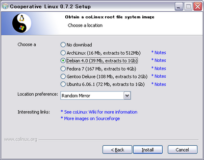
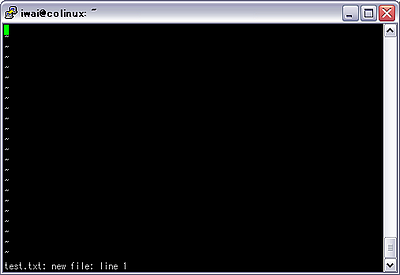

株式会社 アイプランニング
Towa Edogawabashi building 8F
Yamabuki-cho 347
Shinjuku-ku Tokyo
Phone: 03-5225-1147
Linux環境をWindows上に構築することが出来る、coLinuxを
使って、Unixコマンドの学習環境を構築しました。
仕事でUnixサーバにログインすることがあったのですが、Windows/MS-DOS環境しか
使ったことがなかったので、コマンドや概念の違いに驚きました。
今回はcoLinuxを使って、自分専用の練習用Unix環境を作ってみることにします。
何を使うのか？
いろいろ調べて、Cygwin、UnxUtilsなど、手軽に導入できそうな環境があることが分かりました。
WindowsをUnixのように使えるのもいいんですが、
LinuxとWindowsとの違いも勉強したかったので、
本物のLinuxカーネルを使えるcoLinuxを試してみることにしました。
１．インストール
まず、coLinuxのstable（安定版）インストーラを取得します。
[coLinuxオフィシャル（英語）]
今回インストールしたのは、"coLinux-0.7.2.exe"です。
以下のリンク先を参考にインストールしてください。
[Cooperative Linux(coLinux)のメモ]
注）「coLinux 0.7.xのインストール」→「coLinux 0.7.xのインストール」を参照してください。
基本的に以上のサイトのとおりにインストールできます。
私はディストリビューションにはDebian4.0を選択しました。

ネットワークの設定が必要な分、CygwinやUnxUtilsと比べるとインストールが大変です。
私がインストールで詰まった点は以下のとおりです。
Pingが通らない
ホストからcoLinuxへPingは通ったんですが、
coLinuxからホストへ通らず悩んでしまいました。
原因は、単にファイアウォールで遮断されていただけでした。
ファイアウォールを使っている場合、
一時的にPingを通す設定にしてみてください。
apt-getでtime outが発生する
私の環境ではプロキシが通っていたため、
apt-get update
で詰まりました。
apt-getをプロキシ経由で実行するには、aptの設定ファイルを編集する必要があります。
editor /etc/apt/apt.conf.d/70debconf
で設定ファイルを編集します。
設定ファイルに、以下の行を加えてください。
Acquire::http::Proxy "http://プロキシサーバ:ポート/";
Acquire::ftp::Proxy "http://プロキシサーバ:ポート/";
Ctrl + oで保存した後、
Ctrl + xで終了します。
（ちなみに、debianでは標準で入っているこのエディタは「GNU nano」というそうです。
メモ帳とそう操作が変わらず、常にコマンド一覧が表示されていて分かりやすいので、
ちょっとファイルを編集したいだけ、というときには便利そうです。）
これでapt-get updateできるようになります。
update後に、やっとviなどの標準的なunixツールが使えるようになります。
２．UNIXコマンドを試す
ついdir/wとかやってしまいますが、
unixではlsを使います。LiSt directoryの略だそうです。
UNIXコマンド例
コマンド例をいくつか挙げます。
| ls | ディレクトリの内容を表示する |
| ls > test.txt | ディレクトリの内容をtest.txtに出力する（リダイレクト） |
| rm test.txt | test.txtを削除する |
| cat test.txt | test.txtの内容を表示する |
| more test.txt | test.txtの内容を表示する（スクロール可能） |
| ls | more | ディレクトリの内容を表示する（パイプでmoreに渡すことで、スクロール可能） |
| mkdir test | ディレクトリ"test"を作成 |
| rmdir test | ディレクトリ"test"を削除 |
| cd test | ディレクトリ"test"に移動 |
| cd ~ | ホームディレクトリに移動 |
| cd / | ルートに移動 |
| cd .. | 親ディレクトリに移動 |
| logout -h now | 終了 |
以下のサイトで、UNIXコマンドとMS-DOSコマンドの対応表を読むことが出来ます。
[ASH Multimedia lab. - UNIX基本コマンド]
３．エディタを使う
ほとんどのUNIXシステムで標準インストールされているviを使ってみます。
viの基礎
vi test.txt
と入力すると、以下の画面が出ます。

viの拡張版のvimがインストールされていれば、違った表示になります。
viで使えるコマンドはvimでも有効ですので、まずはviのコマンドを覚えましょう。
viでは「コマンド・挿入・置換・コマンドライン」の
４つのモードを切り替えながら入力と編集を行っていきます。
まず、文字を入力するには、iキーを押して挿入モードに切り替えなくてはいけません。
入力を終了しコマンドモードに戻るにはESCキーを押します。
（Ctrl+[キーでもOKです）
終了は、コマンドモード時に
「:q!」（保存せずに終了）
です。
ESC :q! と入力すれば
とりあえずどこからでも終了できます。
編集コマンド
削除は、挿入モードでDelキーを押すことでも出来ますが、
ESCでコマンドモードに入っていれば、以下のコマンドが使えます。
削除系
| x | 一文字削除 |
| dd | 行削除 |
| dw | 単語削除 |
コマンドモードで、コピーアンドペーストが出来ます。
コピー
| yy | 行ごとコピー |
| yw | カーソル位置の単語をコピー |
ペースト
| p | カーソル位置の後ろにペースト |
| P | カーソル位置の前にペースト |
などがあります。
大文字Pの方がWindows使いにはなじみのある挙動かも知れません。
４．まとめ
ここまでで、ファイルの編集と簡単なファイル操作が出来るようになりました。
せっかく構築した本物のLinux環境ですから、
今後はシェルスクリプトの学習などに使っていこうと思っています。
アイプランニング技術情報
技術情報TOPページ
参考サイト
プログラマ募集中・・・
お客さまの立場に立ってモノが作れる判断力、企画力、コンサルティング能力を磨きたくはありませんか？プログラム能力は、プロジェクトを通じて自然と能力があがるようなシステムになっています。初心者プログラマであっても３年程度で、その能力は初心者だったとは思えないくらいのスキルとなっています。
これは、「最初は誰でも初心者だ」という教育方針があるため、また、多くの社員が入社して初めてプログラミングにふれたという経験があるために自分のつまづき体験や、成功体験を含めた教育がなされているからなのです。
このようにアイプランニングでは、社員１人ひとりの個性と人間性を重視し、スキルにあったマンツーマン教育であなたを一人前のエンジニアへと成長させていきます。 それは誠実なスタッフが集まっているからこそ、どんなお客様からも信頼される企業に成長できるから。私たちはそう考えています。
プログラマを目指して会社に入ったものの、思った通りの仕事をさせてもらえなかったと思っている人、教育システムが十分でなかったためにスキルが身に付いていないと思っている人も気軽にご応募ください。パソコンのスキルに自信のない方でも、マンツーマンの研修制度で一人前に成長できるフィールドを整えておりますので安心してご応募くださいね。
知識だけでなく本当の開発力が身につく環境でのシステム開発でみつかる『やりがい』はもちろん、プライベートでも今までになかった充実感が得られますよ。